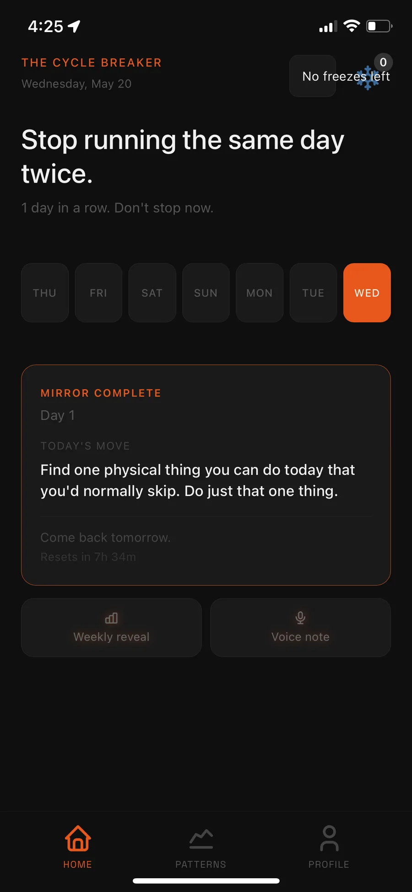
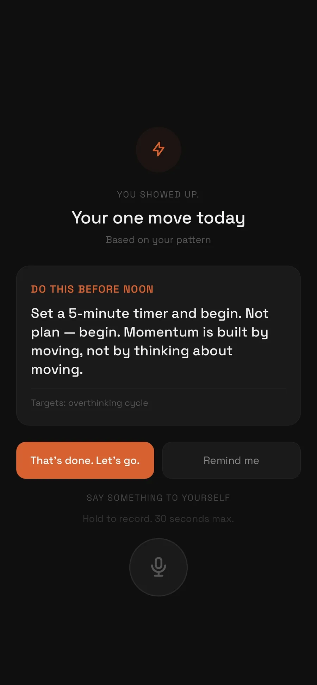
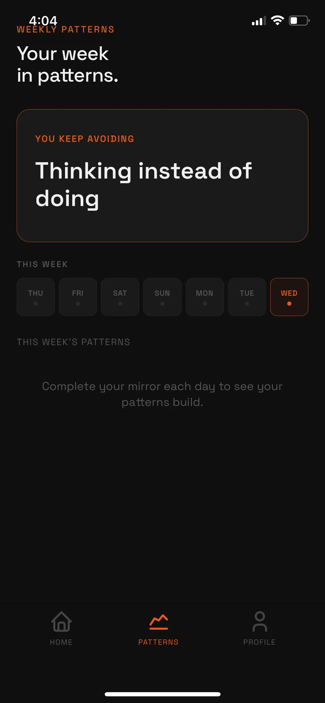
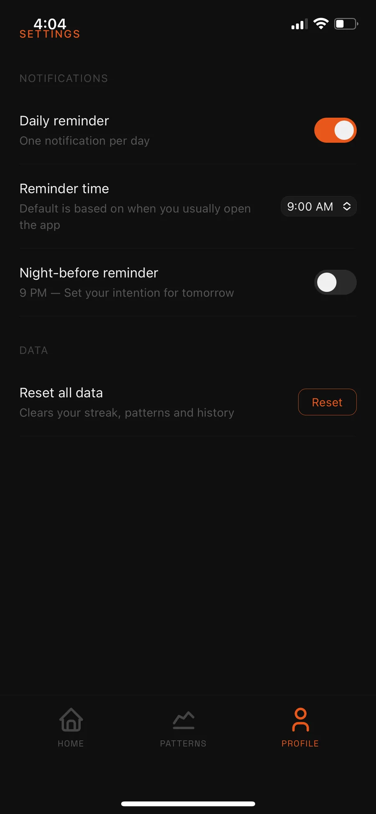

Cycle Breaker
A progressive web app that breaks repeating daily patterns: one prompted move per day, a streak tracker, weekly pattern reveals, and voice notes.
Evidence




Notes
[ Paragraph 1 · about 120–200 words · Why this exists. What repeating pattern you were trying to break and why a single daily move was the answer instead of a habit list. ]
[ Paragraph 2 · about 120–200 words · The decisions. Why a PWA over a native app, why the dark theme and the orange accent, what the streak is for and what it is not for. ]
[ Paragraph 3 · about 120–200 words · How far it got. What works in the prototype, what does not, and what you would do next. Be plain about it. ]